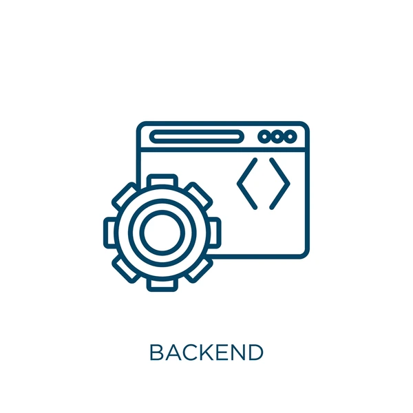

Servicios

Desarrollo de APIs y Backend
Creación de Backend y APIs, para consumir desde el front de una aplicación, incluyendo el guardado
de
datos en una BD. Puede ser tanto On Premise, como Cloud
Desarrollo de Sitio Web Estatico
Creación de Sitio Web, donde el usuario puede consultar información sobre su negocio y contactarse.